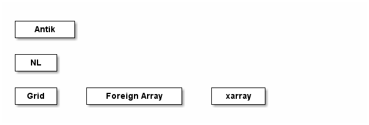

General notes about Numeric Lisp (NL)
Relation between NL, CL, and Antik
Much of NL reference implementation will derive from Antik. In fact, a primary goal is to derive NL from the Antik code base, and then for Antik to be re-built around NL. The hope is that this will allow other functionality to relativly easily build both on top and along Antik's.

Comments (TonyRossini)
One question that arises is whether having xarray-style matrix-like manipulation would be worthwhile, or using affi and grid style manipulation. Since they originally derived from the same author, they are similar in nature, but they also were designed at different evolutionary stages of the author's programming practice.
Packages
NL introduces the NL package. This package redefines math, array creation, and array access functions. It also permanently shadows the symbols CL:FIRST, CL:SECOND, … CL:TENTH. Some of those are replaced by new symbols, (SECOND, THIRD, FIFTH, TENTH)
These namespaces can be used directly, in which case the shadowed CL symbols can be accessed using the CL package designator.
Summary of redefined CL functions
Some functions are redefined in a way that breaks their compatibility with CL, while other simply extend CL's existing capability.
make-array has additional keywords and functionality
See documentation in relevant file
read... use keywords instead of &rest
All CL's read functions use keywords :stream, :eof-error-p,
:eof-value, :recursive-p
All of NL's read function also use these keywords.